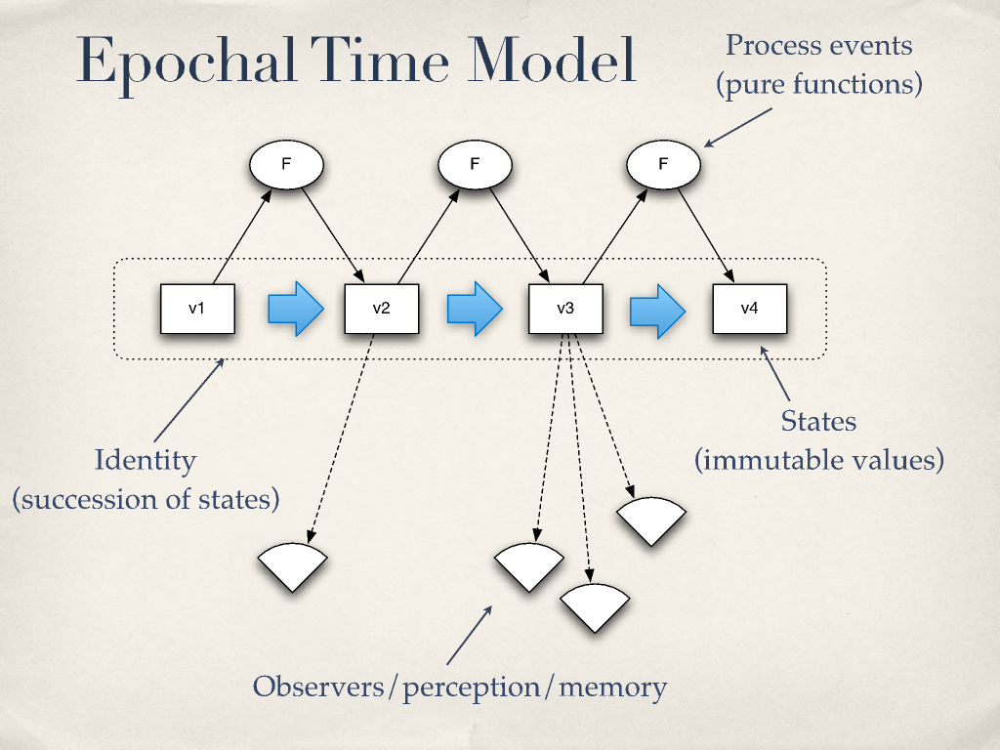
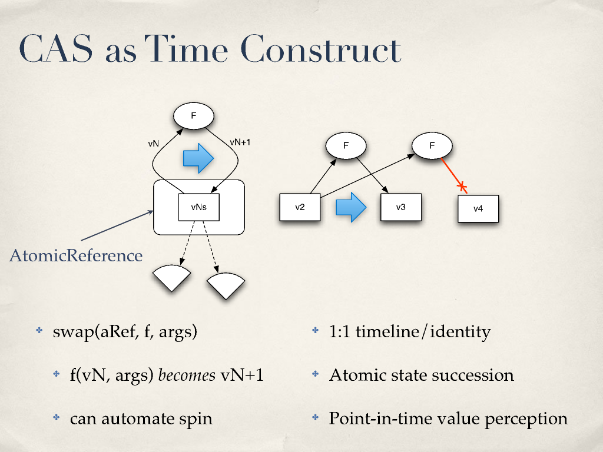
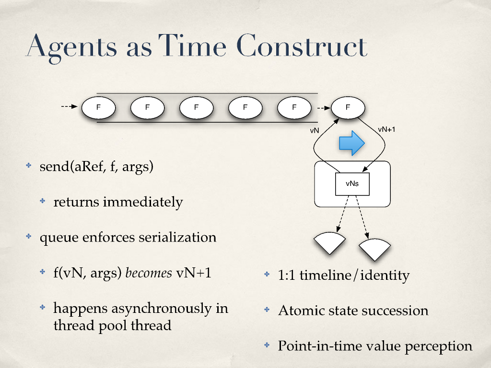
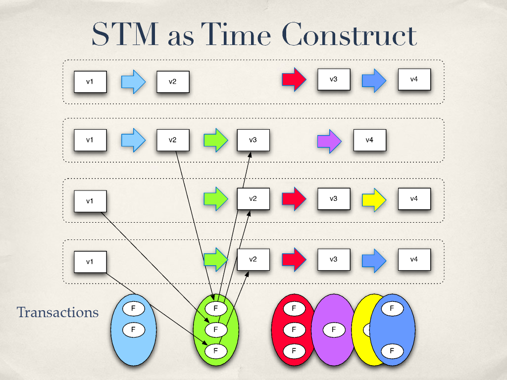

Notes on "Are We There Yet?" by Rich Hickey
Amazing talk by Rich Hickey on fundamental Clojure and Functional Programming concurrency concepts.
May 7, 2018
¶ Introduction
- All OO languages have fundamental things in common:
- Single-dispatch, stateful OO.
- Classes, inheritance, fields, methods, GC
- Differences are superficial: syntax, expressivity.
- C++:
- Simple constructs, same syntax for heap/non-heap things.
- Complexity: knowing when/if to delete.
- No standard automatic memory management.
- Java:
- Simple: only references to dynamic memory + GC.
- Complexity: knowing when you’ll see a consistent value.
- Pure functions are Worry-Free
- But not all programs are pure functions.
¶ Things we are doing wrong
- We created objects that can change in place.
- We left time out.
- Our languages have no notion of values.
- “No man can cross the same river twice.” - Heraclitus
- Actual entities are atomic immutable values
- The future is a function of the past, it doesn’t change it
- We associate identities with a series of causally related values
- Time is atomic, epochal succession of process events
- Terms
- Value: An immutable magnitude, quantity, number…
- Identity: A succession of values whose causation is related.
- State: Snapshots. Value of an identity at a moment in time.
- Time: Relative before/after ordering of casual values.
- Our programs try to “stop time” and know the state of everything to make decisions.
- Stadium analogy: “wait nobody move let me take a picture of the ball in mid-air”.
- Truth is: we are always perceiving the (unchanging!) past.
- Our sensory systems have discretization and simultaneity detection.
- On the other hand, action has to be sequential.
- No two things can affect the same thing at the same time.
- We have to sort of take turns.
- Action and Perception are two different things.
¶ Epochal Time Model

- A point in time is a value - it can’t be changed.
- Our program is still organized in identities (succession of states).
- We use pure functions to produce the feature.
¶ Implementation ideas
-
We need constructs to represent values.
-
We need constructs to coordinate the succession of values.
-
We should consume memory to model time.
-
GC cleans up longer-referenced ‘past’.
-
Use persistent data structures.
- They are immutable.
- Use trees + path copying.
-
Time constructs.
- Need to ensure atomic state succession.
- Need to provide point-in-time perception.
- Multiple timelines possible.
- Many implementation strategies: CAS, Agents, STM, maybe even locks.
¶ CAS (Compare and Swap) as a Time Construct.

- Uncoordinated 1:1.
- Replaces state based on comparisons.
¶ Agents as a Time Construct

- Uncoordinated 1:1.
- Replaces state based on a queue through a thread pool.
¶ STM as a Time Construct

- Multiple timelines in the same app.
- A single transaction affects multiple timelines.
- ACI properties of ACID.
- Using a system that uses MVCC (Multi Version Concurrency Control), it is possible to percept snapshots.
- Keep history in order to satisfy readers.
- It allows readers to have their own notions of a timeline.